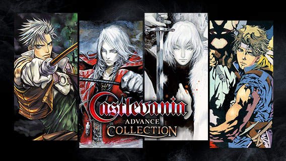
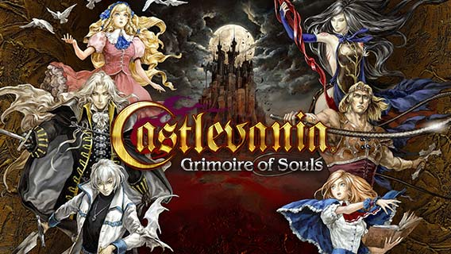
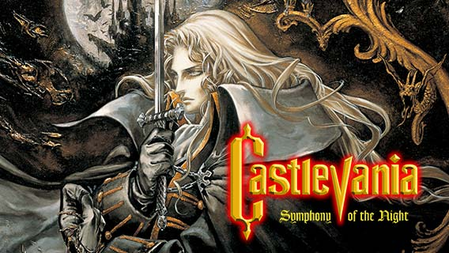

Todo
Actualizaciones
Eventos
Noticias
| Noticia24 Sep. 2021 | ¡Únete a la lucha contra el mal en Castlevania Advance Collection, una compilación de obras maestras eternas de acción y exploración! | Además de los tres juegos legendarios de Castlevania que se lanzaron por primera vez a principios de la década de 2000, esta colección también incluye Castlevania: Vampire's Kiss y algunos bocetos e ilustraciones nunca antes vistos de los juegos. |  Para más detalles > |
| Noticia 17 Sep. 2021 | ¡Castlevania: Grimoire of Souls ya disponible en exclusiva para Apple Arcade! | ¡La película de promoción y la historia se revelan ahora! Disfruta jugando a la acción clásica en 2D a través de los héroes favoritos de los fanáticos de la vasta historia de Castlevania. |  Para más detalles > |
| Noticia 13 Agosto 2021 | Castlevania: Grimoire of Souls llegará pronto exclusivamente a Apple Arcade | Castlevania: Grimoire of Souls llegará pronto exclusivamente a Apple Arcade. Grimoire of Souls ofrece a los jugadores una variedad de formas de abordar cada una de sus 60 etapas a través de sus cinco personajes jugables que incluyen héroes muy queridos del catálogo anterior de Castlevania, ¡Cada uno con sus propias habilidades únicas! | Para más detalles > |
| Noticia4 Marzo 2020 | ¡Castlevania: Symphony of the Night ahora disponible en dispositivos móviles! | ¡El aclamado título clásico de todos los tiempos Castlevania: Symphony of the Night hace su largamente anticipado debut en App Store y Google Play Store! Esta emulación fiel trae de vuelta el aspecto icónico y la música de renombre de este título histórico de Castlevania en todo su esplendor de látigos y golpes de demonios. Redescubre temibles enemigos y amados personajes mientras saltas, corres y te abres camino a través del vasto castillo de Drácula como el legendario héroe de acción Alucard. |  Para más detalles > |
| Noticia 4 Marzo 2020 | ¡Celebra la temporada 3 de la serie animada Castlevania altamente calificada de Netflix! | ¡La tercera temporada de la aclamada serie animada Castlevania se estrena el 5 de marzo de 2020 en Netflix! Basada en los videojuegos clásicos originales, la serie animada rápidamente ganó popularidad y elogios desde su lanzamiento y acumuló una gran cantidad de seguidores. ¡Sumérgete en este oscuro thriller animado con mucha acción sangrienta de matar vampiros! | Ir a la web oficial de Netflix > |
| Noticia 19 Abril 2019 | ¡Colección Castlevania disponible el 16 de mayo! | Como parte de la celebración del 50 aniversario de KONAMI, Castlevania Anniversary Collection presenta 8 títulos de su amada franquicia que definió la serie Castlevania. ¡Mira la alineación completa y los detalles en el siguiente enlace! | Para más detalles > |
| Noticia20 Mar. 2019 | ¡La colección de aniversario de Castlevania está programada para ser lanzada a principios del Verano de 2019! | Lanzado como parte de la celebración del 50.º aniversario de KONAMI, Castlevania Anniversary Collection presenta muchos orígenes de la histórica franquicia Castlevania y estará disponible como un título solo digital a principios del verano de 2019. Estén atentos para más noticias próximas y asegúrese de consultar el sitio web. |  Para más detalles > |
| Noticia 31 Enero 2019 | ¡Oferta exclusiva de Año Nuevo Lunar en Asia! | Desde el 31 de enero hasta el 13 de febrero, "Castlevania Requiem: Symphony of the Night and Rondo of Blood" estará disponible a un precio reducido en PlayStation™ Store en varias regiones de Asia. | Para más detalles > |
| Noticia 26 Octubre 2018 | Castlevania Requiem: Symphony of the Night y Rondo of Blood ahora disponibles en PlayStation®Store！ | ¡2 obras maestras de Castlevania disponibles por primera vez en PlayStation®4! Ahora revive 2 de los mejores títulos de la serie Castlevania: "Rondo of Blood" (PC Engine) y "Symphony of the Night" (PlayStation®). | Para más detalles > |